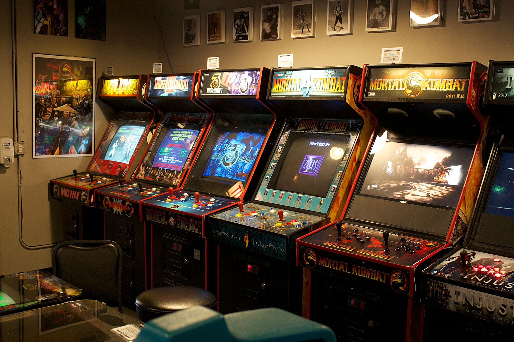

Early Mechanical Games (late 19th century - 1930s):
- The earliest arcade games were mechanical, including shooting galleries and early pinball machines.
- In 1931, David Gottlieb created "Baffle Ball," one of the first pinball games.
The Rise of Pinball (1930s - 1940s):
- Pinball machines gained popularity during the Great Depression for affordable entertainment.
- In the 1940s, pinball technology advanced with features like bumpers and flippers.
Emergence of Electronic Games (late 1940s - 1950s):
- The post-World War II era saw the development of electronic games, including games like "Tennis for Two" and "Spacewar!" that were early precursors to video games.
- In 1958, William Higinbotham created one of the first video games, "Tennis for Two," displayed on an oscilloscope.
The Birth of Video Arcades (1970s):
- In the early 1970s, the first true video arcade games were introduced, most notably with the release of "Computer Space" in 1971 and "Pong" in 1972.
- Nolan Bushnell's Atari released "Pong," which became a massive hit and laid the foundation for the video game industry.
Golden Age of Arcades (late 1970s - early 1980s):
- This period saw the release of iconic games such as "Space Invaders," "Pac-Man," "Donkey Kong," and "Galaga."
- Arcades became popular gathering places for gamers and social hangouts.
Crash and Resurgence (Early 1980s - 1990s):
- The video game industry faced a market crash in the early 1980s, largely due to oversaturation and low-quality games.
- However, with the release of games like "Street Fighter II" and "Mortal Kombat," arcades experienced a resurgence in the early 1990s.
Transition to Home Consoles (1990s - 2000s):
- The rise of home video game consoles like the Nintendo Entertainment System, Sega Genesis, and PlayStation led to a decline in arcade popularity.
- Arcade games began adopting 3D graphics and elaborate cabinets to stay competitive.
Modern Arcades and Redemption Games (2000s - Present):
- Modern arcades have adapted to changing times, often focusing on redemption games, ticket-based systems, and experiential attractions.
- Classic games like pinball and arcade cabinets have maintained a niche following, with dedicated arcades and collectors.
Mobile and Online Gaming (21st Century):
- The advent of smartphones and online gaming has transformed the gaming landscape, making it possible to play arcade-style games on mobile devices and in web browsers.